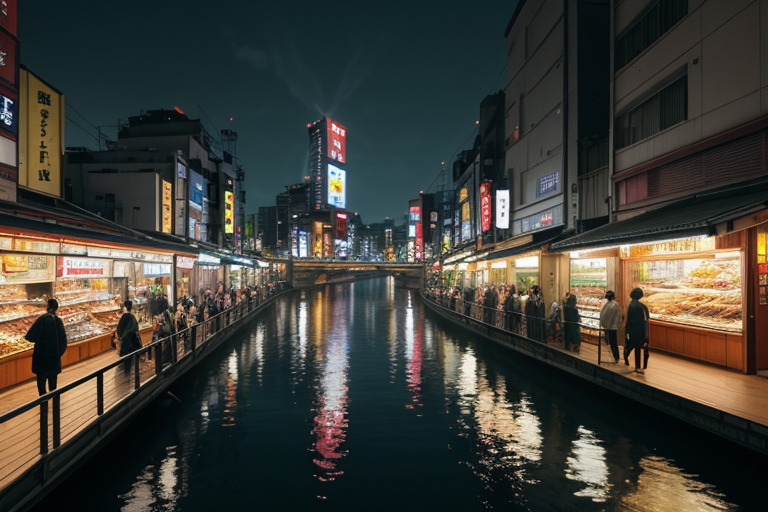
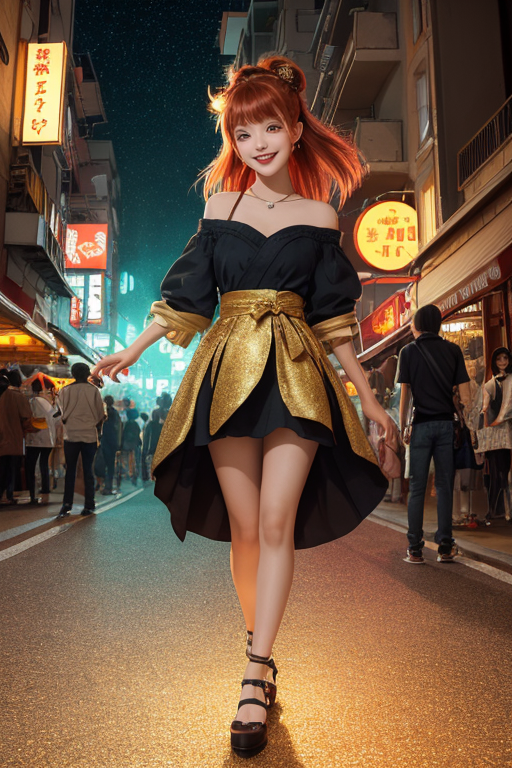
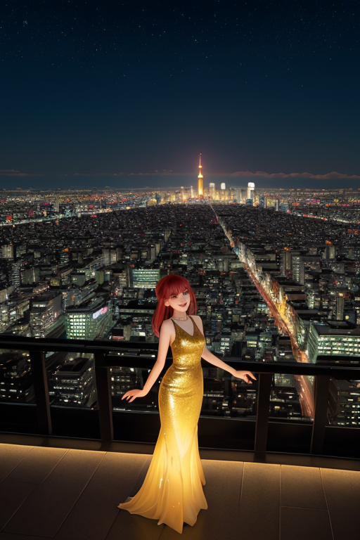
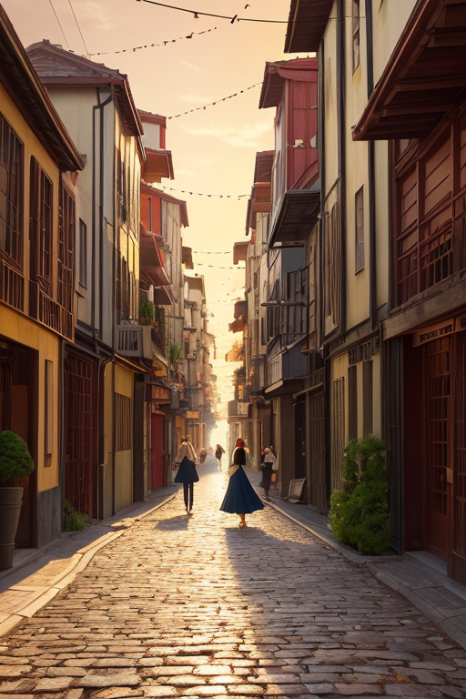

第一章 現実の大阪
あなたはまだ気づいていない。この土地にも、王がいることを。
道頓堀の川面は、ネオンの熱気を冷やそうともせず、鈍く光っていた。観光客の笑い声、屋台の鉄板の音、流れる音楽。すべてが雑然と混ざり合い、ひとつのざわめきとなって街を満たす。そのざわめきの底で、土地は微かに軋んでいた。プレートの境界が、この賑わいの直下でゆっくりと押し合っている。歪みは蓄積され、いつか解放される時を待っている。
その歪みを、誰にも知られずに微調整する者がいた。オオサカリア・リベルは、通天閣の先端に立つわけでも、大阪城の天守に座すわけでもない。人混みに紛れ、あるいは路地裏の暗がりに佇み、目には見えない「境界」——商いと生活、笑いと本音、内と外の狭間——に触れていた。彼の手からは、目に見えない微細な糸が伸び、土地の緊張をほんの少し緩める。地震のエネルギーを一段階減衰させ、亀裂の広がりを寸分遅らせる。それは英雄の業ではなく、不断の調整作業だった。
彼は感情を持たないはずの王だった。しかし、この街の、あまりに濃密な喜怒哀楽が、彼の内側に何かを育て始めていた。

第二章 歪みの兆候
通天閣のネオンが、夕闇に溶けかかっていた。その下を流れる新世界の雑踏は、いつもより幾分か荒い息づかいをしていた。観光客の笑い声の底に、地元の店主たちのため息が混じる。景気の冷え込みは、この街の皮膚を直接に撫でる寒さだった。
リベルは通天閣の展望台に立ち、目を閉じた。掌に伝わるのは、土地の「歪み」だ。経済的なストレス、将来への不安、外部からの圧力——それらが目に見えないひずみとして地盤に蓄積し、やがて物理的な揺れを誘発する。彼の仕事は、その蓄積を少しずつ分散させること。溜まりすぎた怒気を、妖精ナニワラの放つ軽妙な「笑気」でそっとかき混ぜ、爆発を寸前で和らげる。
「王様、今日もキツいわ。みんな、笑う余裕がなくなってきてる」
傍らに現れた妖精リベルタが言った。彼女の声にも、いつもの明るさに隠れた疲れが滲む。
リベルは無言でうなずく。笑いは、この街の盾であった。外部からの衝撃を、軽くあしらい、受け流すための。しかし今、その盾自体にひびが入り始めている。彼は問うた。盾が割れた時、笑いは武器に変わるのか？ 変わるべきなのか？ 感情を持たぬはずの彼の胸に、初めて、もどかしさに似た感覚が芽生えた。
第三章 王の葛藤
道頓堀の喧噪は、リベルの耳には歪みの軋む音として届いた。商人たちの駆け引き、客引きの声、流れる笑い声。全てが「境界」の緊張を孕んでいる。彼の役割は、この緊張を緩和し、均衡を保つことだ。笑いで包み、受け流すこと。それが盾であった。
しかし今、歪みは深く、鋭い。かつて大坂の陣で焼け落ち、幾度も再生したこの街の地層に、拒絶の断層が走り始めていた。外からの圧力、内なる疲弊。リベルタやナニワラが必死に分散させる怒気は、次第に笑いでは包みきれぬ量へと膨らむ。
「武器にしちゃいかんのかい？」
リベルタが呟いた。その言葉は、彼自身の内から湧いた疑問だった。笑いを刃に変え、歪みそのものを切り裂くこと。それは可能かもしれない。だが、武器は必ず対立を生む。商いと人情で、異なるものを「内」へ取り込んできたこの街の在り方に、それは反する。
通天閣が鈍く光る新世界を見下ろしながら、リベルは思う。盾として砕け散るか、武器として他者を傷つけるか。彼は、どちらも選べなかった。感情という重みが、彼の判断を鈍らせる。

第四章 妖精との対話
リベルタは、王の肩に軽く腰を下ろした。新世界の喧騒が、少しだけ遠く聞こえる。
「王様、笑いってな、もともと『外』から来るもんやったんです」
彼女は、通天閣の先、西の空を見つめながら言った。
「異なる言葉、異なる習慣。それが出会う『境界』で、最初に生まれるのが緊張や。その緊張を、一瞬で溶かす力が笑いや。武器でも盾でもない。それは……『通路』なんです」
リベルは黙って聞いた。通路。
「商いも同じや。こちらから向こうへ、向こうからこちらへ。モノや金だけやない。想いも、文化も、行き来させる。その通路が太ければ太いほど、街は豊かになる。でもな」
リベルタの声が、ほんの少し曇った。
「通路は、『別れ』も運ぶんです。受け入れられへんもの、通り抜けられへん想いは、そこで立ち止まる。置いて行かれる。笑いが、どんなに頑張っても繋げられへんものがある。それが、この街の、どこか哀しい匂いの正体やと思う」
王は、自分の中に芽生えた「情熱」という感情が、この通路の維持と、時にその閉鎖をも願う矛盾した欲求であることに、初めて気がついた。

第五章 微調整と余韻
新世界の路地裏で、王は一人の老人を見つけた。老人は古びた椅子に座り、誰とも話さず、ただ通りゆく人々の笑い声を聞いていた。王はその傍らに佇み、妖精たちに命じた。リベルタが老人の肩にそっと触れ、ナニワラが通りがかりの若者に、ほんの少し道を逸れるよう囁く。若者は何気なく老人の前で足を止め、落としたハンカチを拾い上げる。その一瞬、老人と若者の目が合う。何も語られない。ただ、老人の頬が微かに緩んだ。
王は災害を消せない。この街の、別れや置き去りにされた想いを消すこともできない。しかし、一秒の遅れ、一センチのずれ、一瞬の視線の交差を調整することはできる。それは救済ではない。ただの、微かな風の流れのようなものだ。
笑いは、悲しみを消す盾ではない。また、敵を打ち負かす武器でもない。それは、重たい現実の横を、かすかにすり抜ける風のようなもの。通り過ぎるだけだが、ほんの一瞬、肌に触れる涼しさを残していく。
あなたの町にも、王がいる。